Intelectualidades
Bem-vindo ao nosso blog escolar! Aqui compartilhamos nossos projetos, ideias e aprendizados. Para iniciar nossa jornada, deixamos algumas reflexões fundamentais que guiam nosso pensamento crítico.

"Não faremos injustiça aos filósofos que se tiverem formado entre nós, mas dir-lhes-emos palavras justas, ao forçá-los a tomar conta dos outros e a guardá-los."- Platão
Platão entendia que a função do intelectual era indissociável da responsabilidade política, agindo com ética e justiça.

"Os filósofos limitaram-se a interpretar o mundo de diversas maneiras; o que importa é transformá-lo."- Karl Marx

“Lugar de fala não é silenciamento, é localização.”- Djamila Ribeiro
O intelectual engajado busca quebrar o silêncio secular imposto a negros, indígenas e mulheres, permitindo que eles sejam sujeitos da própria história.

“Cada sociedade possui seu regime de verdade.”- Foucault
Foucault entendia que o intelectual deveria analisar como as instituições fabricam regimes de verdade e moldam os sujeitos.

“Sapere aude! Tenha coragem de fazer uso do teu próprio entendimento.”- Immanuel Kant
Para Kant, sair da menoridade exige autonomia, razão e pensamento crítico.
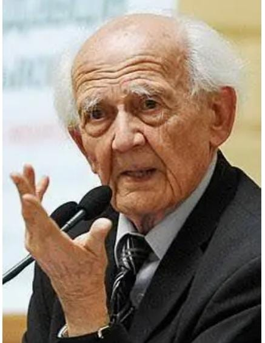
"Nenhuma sociedade que esquece a arte de questionar pode esperar encontrar respostas para os problemas que a afligem."- Zygmunt Bauman
Mudanças Climáticas
Nesta seção estão reunidos os trabalhos desenvolvidos pelos estudantes sobre mudanças climáticas, seus impactos e os desafios ambientais contemporâneos.
Mudanças Climáticas
A foto critica as mudanças climáticas ao mostrar a natureza destruída pela poluição. A flor morta, as árvores secas, a fumaça das fábricas e o céu vermelho representam os impactos da ação humana e alertam para a necessidade de cuidar do meio ambiente.
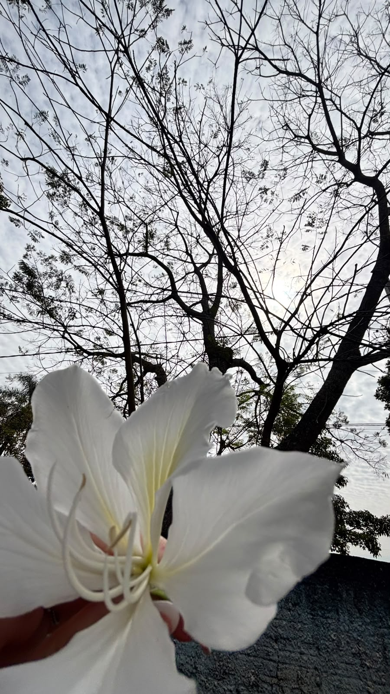
Socorro O clima muda, o mundo sente, e o céu se aquece lentamente. As geleiras começam a derreter, e os mares sobem sem perceber. Florestas queimam, rios secam, os animais sofrem e se deslocam. Temperaturas fortes vêm sem avisar, enquanto a Terra pede para respirar. Mas ainda existe esperança no ar, se cada pessoa decidir colaborar. Plantar uma árvore, preservar a natureza, é cuidar do futuro com amor e coragem. O planeta é nossa única morada, precisa ser protegido, não abandonado. Se hoje mudarmos nossa direção, amanhã teremos um mundo melhor em nossas mãos.
Vídeos
Confira os conteúdos audiovisuais produzidos pelos estudantes.
Vídeo do trabalho
1. Primeira Estrofe (00:25 - 00:46) Max Weber: O ser humano moderno tenta resolver a crise do clima apenas com cálculos e números (razão instrumental), em vez de mudar suas atitudes morais. Capitaloceno (Haraway): A natureza é vista apenas como um recurso econômico a ser medido e explorado. 2. Segunda Estrofe (00:48 - 01:10) Max Weber: Trata do "desencantamento do mundo". A ciência e a técnica tiraram o mistério e a magia da natureza. Capitaloceno (Haraway): Árvores viram lenha e rios viram canais; a lógica extrativista destrói a conexão do ser humano com a vida natural. 3. Terceira Estrofe (01:12 - 01:32) Max Weber: O desejo de dominar a natureza por meio da técnica acaba gerando destruição involuntária. Capitaloceno (Haraway): Fenômenos como a chuva ácida e o aquecimento global são consequências desastrosas da ilusão de que o homem controla o planeta. 4. Refrão (01:34 - 01:57 / 02:58 - 03:20) Max Weber: A "jaula de ferro" representa as estruturas do capitalismo e da burocracia que nos aprisionam na busca por lucro e eficiência. Capitaloceno (Haraway): Essa busca cega pelo lucro transforma a jaula em um sistema que nos leva à própria extinção. 5. Quarta Estrofe (02:06 - 02:29) Max Weber: Mostra a ação burocrática: cumprimos metas e papéis legais (como licenças e alvarás) sem resolver o problema de fato. Capitaloceno (Haraway): Criar "créditos de carbono" e papéis ambientais é tentar resolver a crise ecológica usando a mesma lógica de mercado que a provocou. 6. Conclusão (02:31 - 02:56 / 03:25 - 03:54) Max Weber: Defende a necessidade de uma ação guiada por valores éticos e pela responsabilidade com o futuro. Capitaloceno (Haraway): Propõe recriar laços com o planeta e reimaginar formas de viver para sobreviver às ruínas ecológicas.
Racismo
RACISMO: QUANDO A MÚSICA, A POESIA E O PENSAMENTO DÃO VOZ A UMA LUTA.
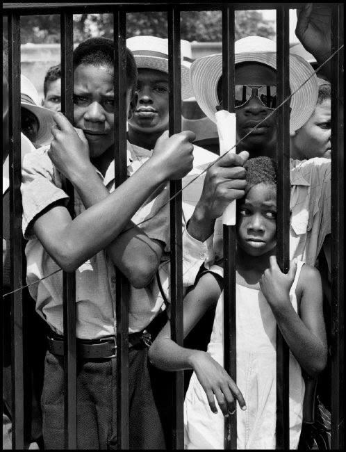
O QUE É O RACISMO?
O racismo acontece quando uma pessoa ou grupo é discriminado, inferiorizado ou tratado de maneira injusta por causa de sua cor, raça, origem ou etnia. Ele pode aparecer em ofensas, exclusões, estereótipos e também em desigualdades que foram construídas ao longo da história. Por isso, falar sobre racismo não é apenas falar sobre atitudes individuais. Também é necessário entender como a sociedade reproduz determinadas ideias e desigualdades.
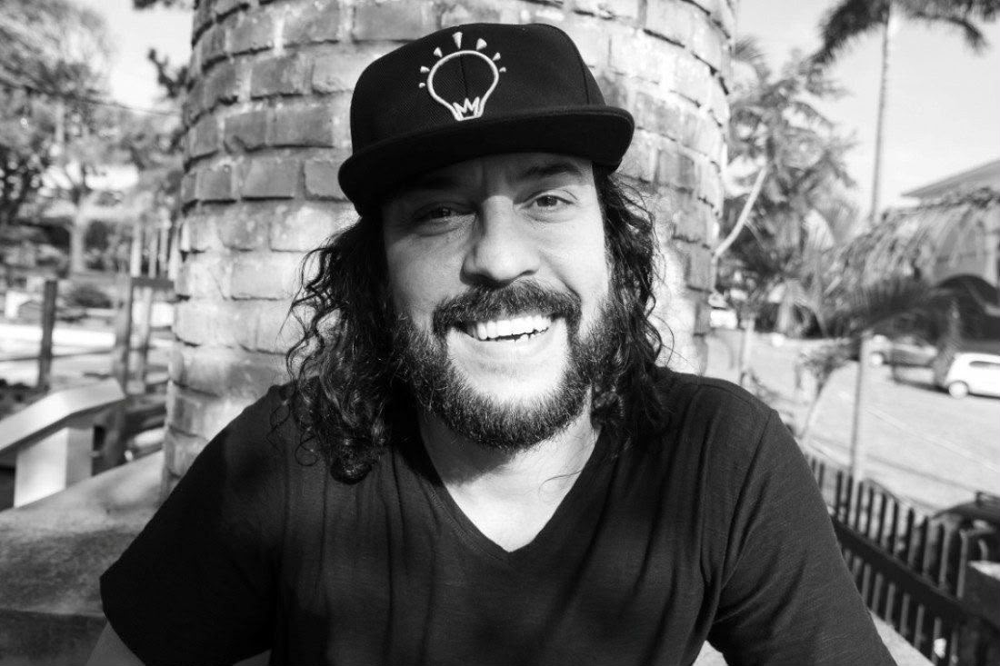
GABRIEL, O PENSADOR E A MÚSICA COMO PROTESTO
Gabriel, o Pensador utiliza o rap para abordar problemas sociais, entre eles o preconceito e a desigualdade. Em “Racismo é Burrice”, ele denuncia diretamente o preconceito racial e questiona a ideia de que alguém possa ser superior ou inferior por causa da cor da pele. Já em “Cachimbo da Paz”, a história de um personagem indígena permite refletir sobre diferenças culturais e sobre a maneira como a sociedade trata aquilo que considera diferente. As duas músicas mostram como a arte pode transformar problemas sociais em reflexão.
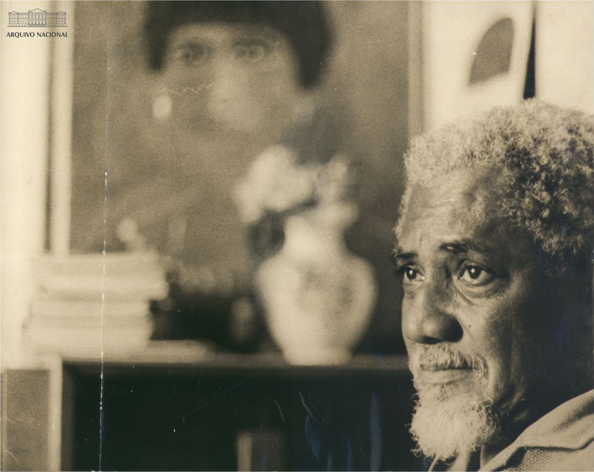
SOLANO TRINDADE E “SOU NEGRO”
A poesia também pode ser uma forma de resistência. Em “Sou Negro”, Solano Trindade fala sobre seus antepassados, sua identidade e sua ancestralidade.
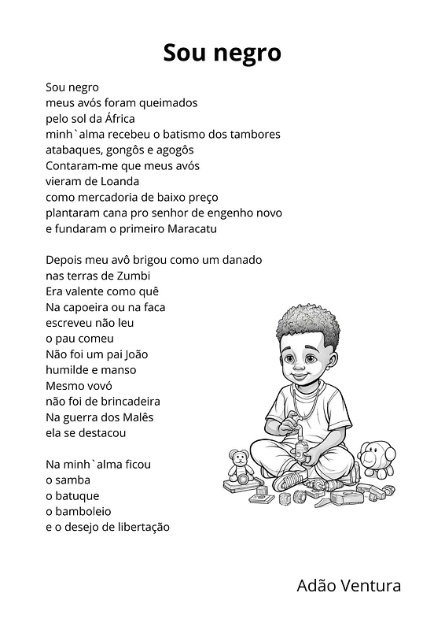
O poema não apresenta a história negra somente pelo sofrimento da escravidão. Ele também destaca a cultura, a resistência e a luta pela liberdade. A obra mostra que lembrar a história e valorizar a ancestralidade também são formas de enfrentar o racismo.
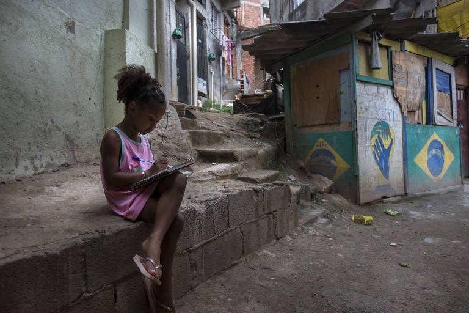
PIERRE BOURDIEU: COMO AS DESIGUALDADES SÃO REPRODUZIDAS?
O sociólogo Pierre Bourdieu ajuda a entender que muitas desigualdades não aparecem apenas em atitudes individuais. Elas também podem ser reproduzidas pelos costumes, pela educação, pela cultura e pelos padrões que aprendemos a considerar normais. Isso pode ser relacionado ao racismo porque determinados grupos podem ter mais acesso a oportunidades e reconhecimento, enquanto outros enfrentam obstáculos históricos.
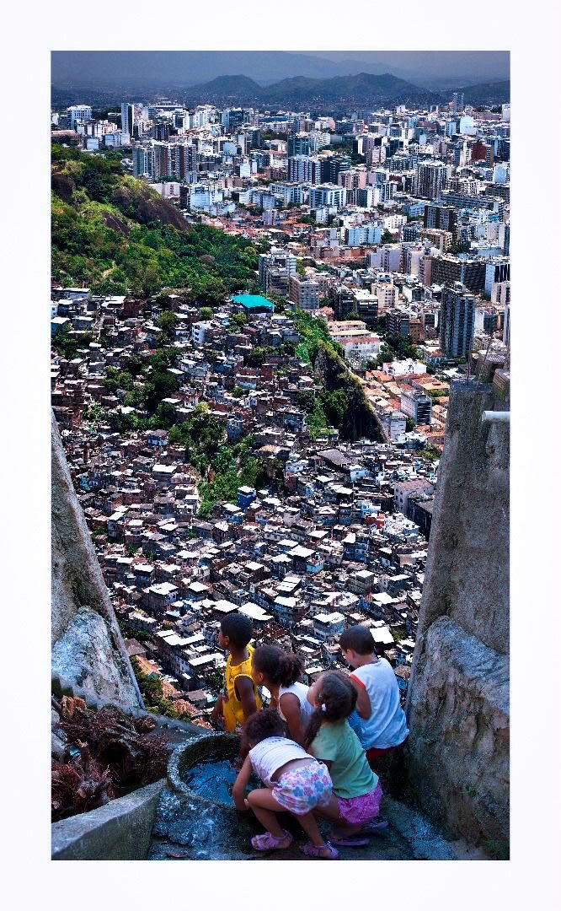
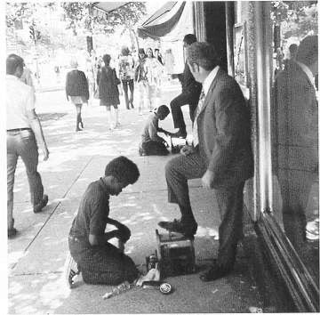
As fotografias podem representar visualmente essas desigualdades. É importante lembrar que pobreza e racismo não são a mesma coisa, mas desigualdades econômicas e raciais podem se relacionar. As imagens fazem surgir uma pergunta: Por que pessoas que vivem na mesma sociedade podem ter oportunidades tão diferentes? Enfrentar essas desigualdades exige educação, políticas públicas, combate à discriminação, representatividade e acesso a oportunidades.
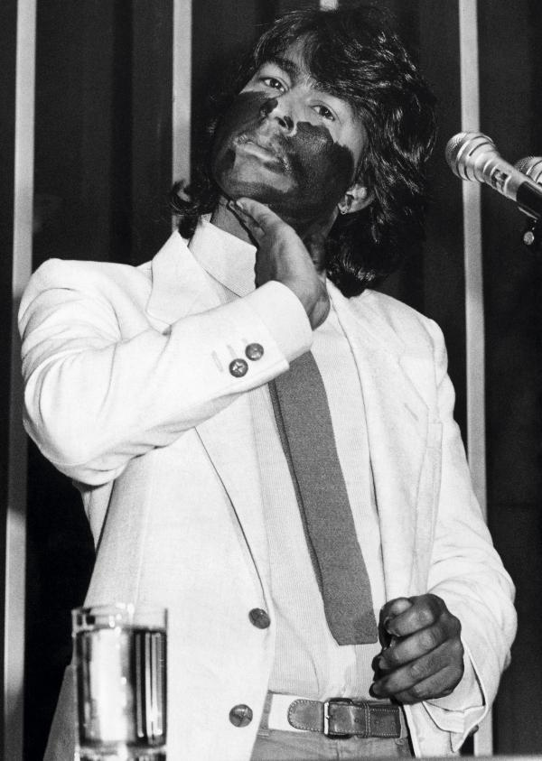
AILTON KRENAK E O DIREITO DE SER OUVIDO
A discussão sobre cultura e reconhecimento também pode ser relacionada a Ailton Krenak, escritor, filósofo e pensador indígena. Em 2024, Krenak tornou-se o primeiro indígena a ocupar uma cadeira na Academia Brasileira de Letras. Em seu discurso de posse, afirmou: “Eu não sou mais do que um, mas eu posso invocar os 305 povos.” A frase mostra que sua presença naquele espaço representava muito mais do que uma conquista pessoal. Ele levava consigo a história e a voz de muitos povos indígenas. Isso se relaciona diretamente com “Cachimbo da Paz”. A música apresenta o encontro entre uma cultura indígena e uma sociedade com outros costumes. Krenak, por sua vez, permite que essa discussão seja vista a partir de uma voz indígena.
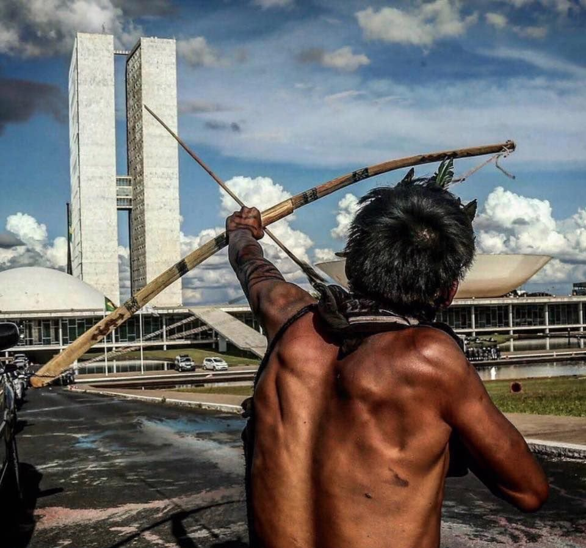
A questão passa a ser: Quem tem o direito de contar a história de um povo?
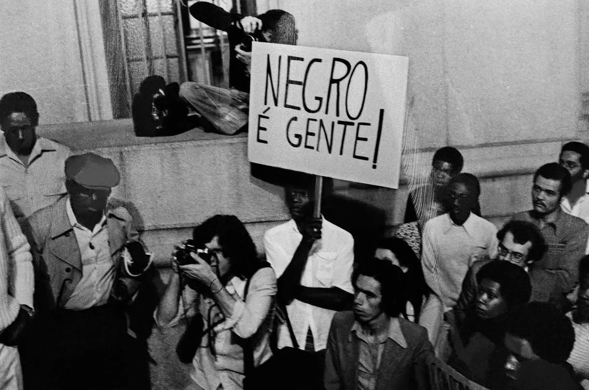
COMO O RACISMO É ENFRENTADO?
O racismo é enfrentado quando a sociedade reconhece o problema e age para transformá-lo. Isso acontece por meio da educação, do conhecimento da história e da cultura negra e indígena, da valorização da diversidade, da representatividade, de políticas públicas e do combate à discriminação. Também significa questionar ideias que foram tratadas como normais durante muito tempo. Quando colocamos Gabriel, Solano Trindade, Bourdieu e Ailton Krenak em diálogo, percebemos diferentes formas de enfrentar esse problema: Gabriel denuncia. Solano preserva a memória.Bourdieu ajuda a compreender as desigualdades. Krenak amplia nossa visão sobre os povos indígenas. E talvez seja justamente essa a importância da arte e do pensamento: fazer a sociedade enxergar, questionar e transformar aquilo que durante muito tempo foi tratado como normal.
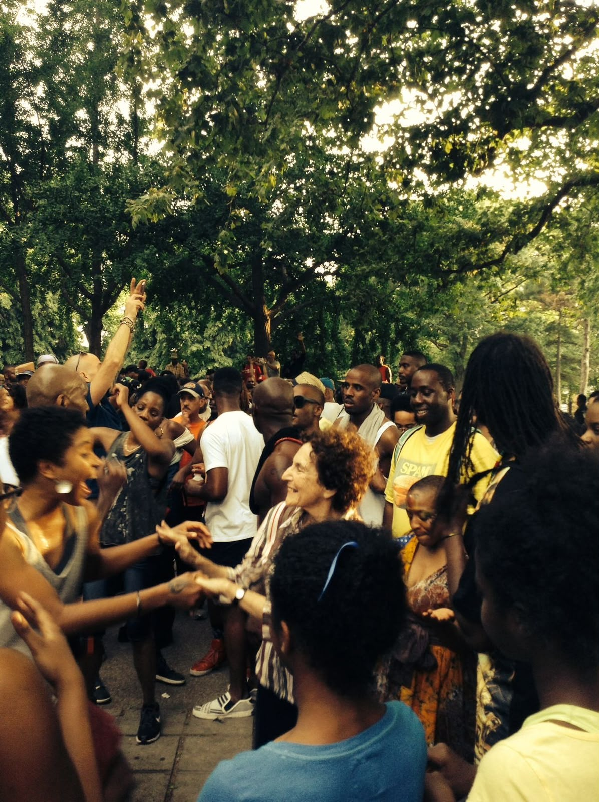